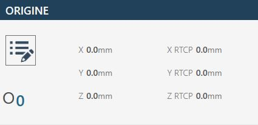
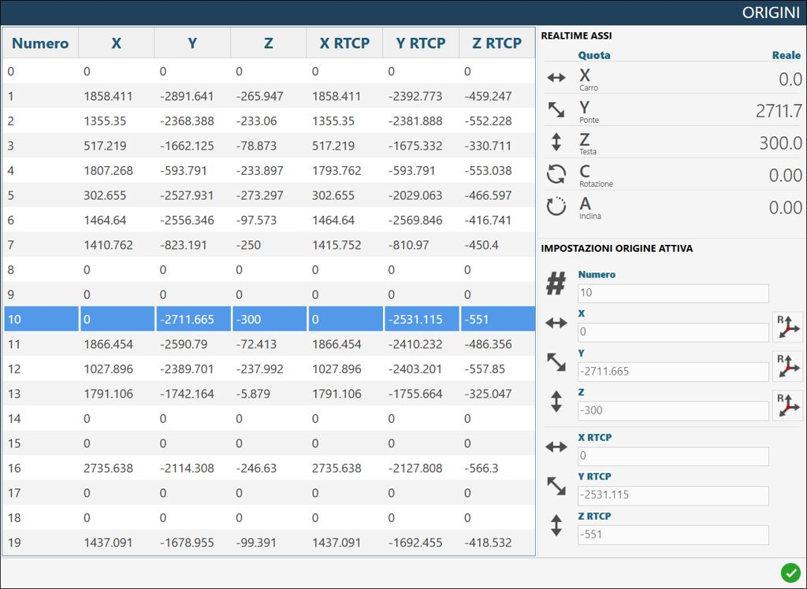
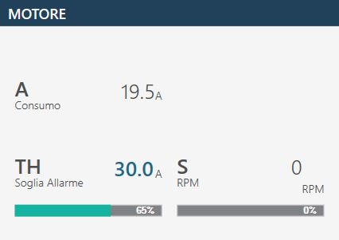
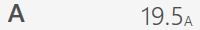

Al iniciar la aplicación, si ya se ha realizado la puesta a cero de los ejes, se mostrará la siguiente pantalla inicial:
Barra superior
Parámetros Permite acceder a los parámetros del programa Parametrix.
Parámetros de herramienta Al pulsar el botón, se accede a la página de parámetros de la herramienta. Consulte el capítulo «Configuración de la herramienta» para obtener una descripción detallada de la página de parámetros.
Rotación automática 0/ 90 grados El eje «C» se desplaza automáticamente a 0 o 90 grados en el momento en que se pulsa el botón.
Aparcamiento automático Al pulsarlo, la máquina realiza automáticamente un desplazamiento de los ejes «X», «Y», «Z» y «C» hasta la posición cero. Los desplazamientos son realizados por la máquina respetando el siguiente orden: (A) - Eje «Z» en posición de cero absoluto; (B) - Eje «C» en posición de 0 absoluto; (C) - Ejes «X» e «Y» simultáneamente en posición de cero absoluto;
¡ATENCIÓN!
Para realizar el aparcamiento automático deben cumplirse determinadas condiciones de seguridad:
La posición del eje «A» debe estar a 0_.
Asegúrese de que la zona de movimiento afectada por el posicionamiento (véase la figura al lado) esté libre.
Encendido / Apagado del agua interna Al pulsar este botón se activa el agua desde el interior de la herramienta. El indicador situado encima del botón cambia de color: Verde = Encendida; Rojo = Apagada.
Encendido / Apagado del agua externa Al pulsar este botón se activa el agua del conducto principal. El indicador situado encima del botón cambia de color: Verde = Encendida; Rojo = Apagada.
Cambio manual de herramienta Al pulsar el botón, se inicia el procedimiento de cambio de herramienta.
Mantenimiento Al pulsar este botón se mostrará una ventana que contiene todas las operaciones de mantenimiento de la máquina. Se mostrarán tanto las operaciones de mantenimiento que deben realizarse como las que se encuentran dentro de los parámetros normales.
Ayuda Al pulsar este botón se modifican ligeramente los gráficos de todos los botones visibles y su comportamiento. A partir de ese momento es posible pulsar cualquier botón que tenga un pequeño signo de interrogación en la esquina superior izquierda para conocer la función ofrecida por el botón mediante un breve mensaje. Para salir de este modo de asistencia, basta con pulsar de nuevo el botón «Ayuda».
Elementos comunes de la interfaz
Los elementos de la interfaz gráfica comunes a las distintas funciones son:
Ejes
En esta interfaz se muestran los valores de los ejes de la máquina.
Ejemplo del elemento de la interfaz «Ejes» con origen 0 y puesta a cero de los ejes ya realizada:
Ejemplo del elemento de la interfaz «Ejes» con origen 0 y puesta a cero de los ejes aún por realizar:
A continuación se explican los elementos que componen esta sección de la interfaz común, tomando como referencia el caso en que los ejes ya están puestos a cero.
Cota real: indica la posición del eje respecto al origen activo. Cota objetivo: indica la cota que debe establecerse para efectuar el movimiento del eje pulsando el botón MDI o RTCP. F: Feed, velocidad de movimiento expresada en mm/minuto. DTG: Distance To Go, distancia hasta el objetivo. A: Amperios.
Restablecer eje Al pulsar este botón se establece el cero del origen activo en el punto en el que se encuentra el eje correspondiente (X, Y o Z). La operación de restablecimiento del eje solo puede realizarse en orígenes distintos de 0 (cero). Para utilizar el origen en coordenadas de herramienta (TCP), es necesario haber establecido las medidas correctas de la herramienta montada antes de pulsar el botón Restablecer eje.
Rotación automática _90 grados La posición del eje «C» aumenta 90 grados en sentido horario. Ejemplo: la máquina se encuentra a 12 grados; al pulsar el botón «Rotación automática _90 grados», la máquina se desplaza a 102 grados: 12 _ 90.
Rotación automática -90 grados La posición del eje «C» disminuye 90 grados en sentido antihorario. Ejemplo: la máquina se encuentra a 102 grados; al pulsar el botón «Rotación automática -90 grados», la máquina se desplaza a 12 grados: 102 - 90.
Controles
En este panel se presentan algunos botones cuyo comportamiento se explica a continuación:
Modo de interpolación Cuando el botón está activo (figura de la derecha), los movimientos manuales Z, C y A se ejecutan teniendo en cuenta la rotación y la inclinación. Movimiento interpolado del eje Z: al accionar el JOG del eje Z, la máquina se moverá alineada con la herramienta montada.
NOTA
El tipo de herramienta seleccionado influye en la dirección de movimiento.
Movimiento interpolado del eje C: al accionar el mando del eje C, además de la rotación se moverán también los ejes X e Y, de modo que el filo interior de la hoja (o la punta de la herramienta) permanezca inmóvil. Movimiento interpolado del eje A: al accionar el mando del eje A, además de la inclinación se moverán también los ejes X, Y y Z, de modo que el filo interior de la hoja (o la punta de la herramienta) permanezca inmóvil en su posición. No se permiten movimientos simultáneos de los ejes Z, C y A con el modo interpolado activo.
¡ATENCIÓN!
Preste mucha atención al estado del botón, ya que los movimientos de la máquina podrían ser diferentes de lo esperado.
Interpolación RTCP Realiza un posicionamiento definido en la cota «Objetivo» para la cota A o la cota C, manteniendo inmóvil el filo interior de la hoja (o la punta de la herramienta). Para más información, consulte el apartado: «Funcionalidad semiautomática RTCP Rotation Tool Center Point»
MDI Al pulsarlo, la máquina realiza el movimiento hasta alcanzar las cotas establecidas en las cotas objetivo (véase arriba). La velocidad de los ejes X e Y se controla mediante sus respectivos potenciómetros, mientras que los demás ejes se controlan mediante el potenciómetro interpolado.
Herramienta
En este elemento de la interfaz se muestra la información principal relativa a la herramienta montada en la máquina.
Ejemplo de herramienta montada en la máquina: Disco
Ejemplo de herramienta montada en la máquina: Broca hueca
Herramienta activa Al hacer clic en este botón se muestra una ventana emergente de confirmación que permite al operador modificar el tipo de herramienta montada en la máquina.
La elección está limitada a:
Disco
Fresa / Broca hueca
Origen
Al hacer clic en el campo «Origen» se mostrará un pequeño teclado numérico en pantalla que permitirá al operador seleccionar un origen diferente con el que trabajar. Los valores de Origen pueden variar de 0 a 19, ambos incluidos.
Ejemplo con origen 0:

Ejemplo con origen 10:
Configuración avanzada de origen
Al pulsar el botón de opciones situado encima del origen se abrirá un panel con una vista centralizada de todos los orígenes disponibles y sus valores asociados. El origen activo puede cambiarse haciendo clic en la fila correspondiente.

RTCP - Rotation Tool Center Point
La función RTCP permite al operador realizar un posicionamiento para un corte inclinado manteniendo invariable la altura de la herramienta, aunque se modifique la inclinación durante el posicionamiento. El filo interior del disco permanecerá en la misma posición en la que se encontraba al inicio del movimiento.
Procedimiento de funcionamiento
Establezca la cota objetivo en el área dedicada al eje «A» (inclinación) o «C»
Al pulsar el botón RTCP se inicia la función de inclinación o rotación manteniendo fijo el punto más bajo de la herramienta.
NOTA
El movimiento mediante el mando RTCP solo está permitido cuando la llave codificada está insertada en el puesto correspondiente, identificable en la consola del operador.
Espere a que la máquina se posicione en la cota establecida.
Motor
En esta sección se muestran algunas estadísticas relativas al motor de la máquina:

Revoluciones por minuto (RPM) Indica las revoluciones por minuto del motor del husillo. Si el sentido de rotación es horario, el valor es positivo; si el sentido es antihorario, el signo es negativo.

Consumo (A) Indica la corriente absorbida por el motor del husillo.
Umbral de alarma (A) Indica el umbral por encima del cual se activa la alarma y se bloquea la rotación del husillo.
Feed
El valor Feed representa el desplazamiento interpolado de la máquina.
Barra lateral derecha
Al iniciar la aplicación, la función preseleccionada es MANUAL. Esta barra lateral contiene los siguientes mandos y programas/funciones disponibles:
Barra inferior
La barra inferior muestra mensajes informativos y de error, así como algunos botones para determinadas funciones. A continuación se muestran tres ejemplos de barra inferior:
Sin alarmas activas.
Con una emergencia general habilitada, indicada mediante un icono, un código de error (en este caso PE0000), la descripción correspondiente y el botón de alarmas de la derecha parpadeando.
Con un mensaje mostrado, en el ejemplo JOG directo activo.
Alarmas Permite al operador acceder a la ventana de alarmas.
Minimización del software Permite al operador salir de la página del software.
Apagado de la máquina Permite al operador apagar definitivamente la máquina.
Alarmas
La página de alarmas indica las Alarmas/Mensajes activos del sistema. Si la máquina no tiene alarmas activas, la página aparece vacía; de lo contrario, habrá una fila por cada error presente. En la siguiente página de ejemplo relativa a la gestión y visualización de alarmas se muestra una alarma activa en el sistema:
Botones de alarmas
Actualizar Sirve para actualizar el estado de las alarmas de la máquina.
Historial de alarmas Permite visualizar el historial diario de las alarmas.
Mensajes / Alarmas Permite elegir si se muestran las alarmas o los mensajes.
Grupos de alarmas Muestra información completa de las alarmas actualmente presentes en la máquina.
Visualización de alarmas - Estándar
La visualización estándar de una de las alarmas mostradas se compone de:
Enlace en línea Un botón con un enlace a la guía en línea correspondiente.
Código de alarma Código identificativo del problema que ha provocado la alarma.
Descripción Una breve descripción del error detectado.
Visualización de alarmas - Historial
El historial diario de alarmas incluye, además de los elementos ya descritos, los siguientes datos:
Momento del cambio de estado Fecha y hora del cambio de estado de la alarma.
Estado de la alarma Estado alcanzado por la alarma (ON / OFF).
Visualización de alarmas - Grupos
El sistema de agrupación muestra una única entrada para cada alarma, evitando duplicados.
Número de ocurrencias Número de veces que se ha activado la alarma.
Momento de la primera activación Fecha y hora de la primera activación de la alarma.
Momento de la última activación Fecha y hora de la última activación de la alarma.